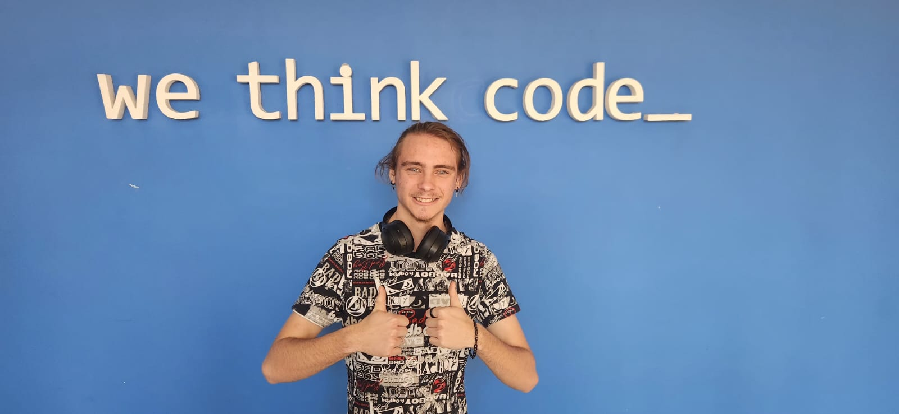
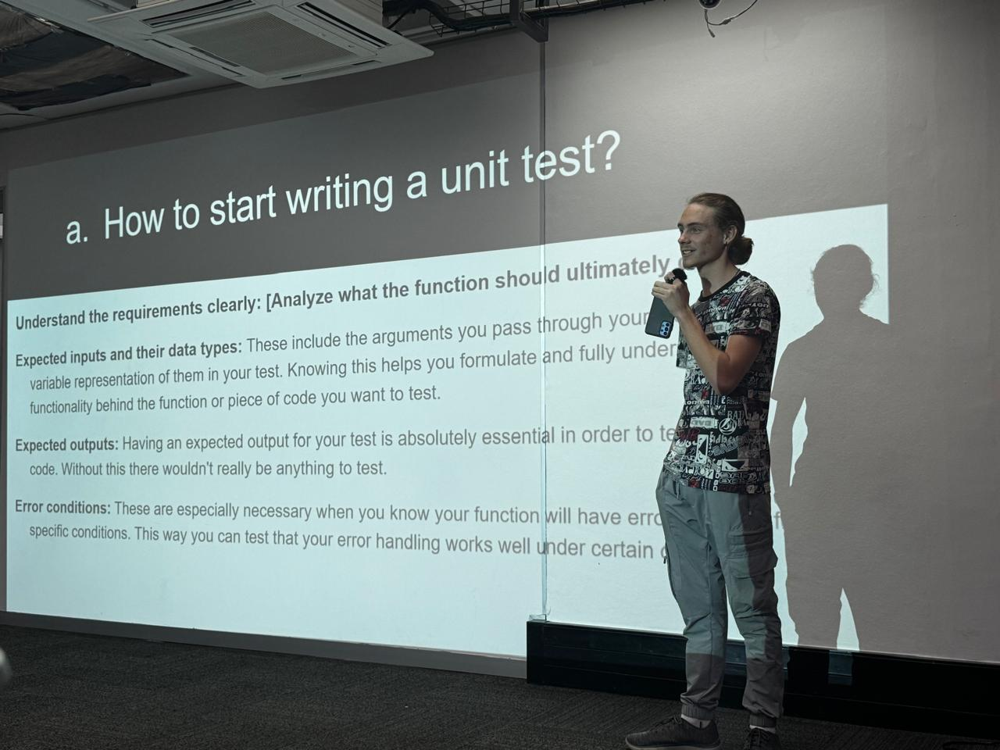

My Biography
I am an aspiring software developer currently training at WeThinkCode_, where I am immersing myself in the world of coding, problem-solving, and innovative software solutions. Driven by curiosity and a passion for technology, I approach every challenge with enthusiasm and a desire to learn. I am deeply enjoying the journey of growth and discovery that comes with mastering new programming languages, frameworks, and development tools. Excited by the endless possibilities in the tech world, I am committed to honing my skills and building a strong foundation for a future in software development. Whether collaborating with peers or tackling complex projects independently, I bring a positive, motivated, and energetic attitude to every step of my journey.

